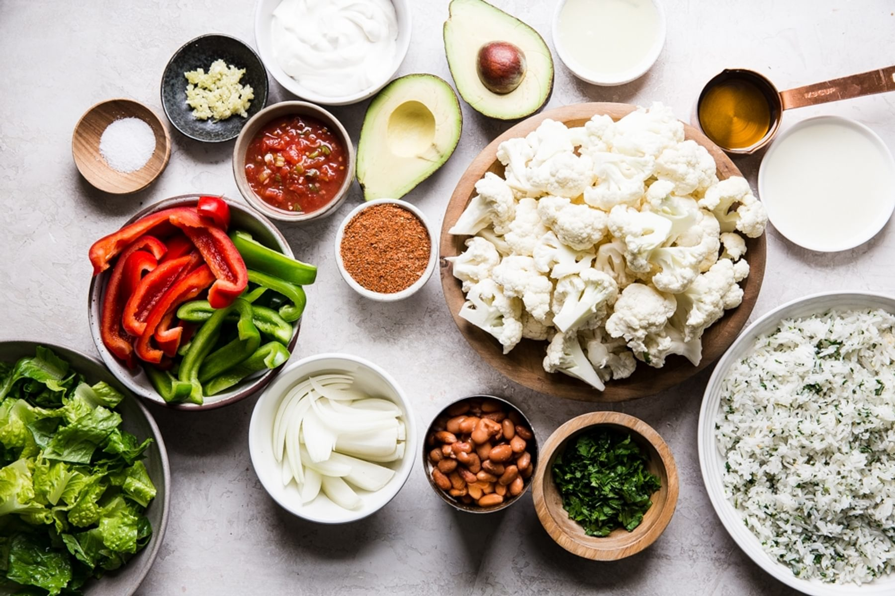

Vegetarian Burrito Bowl with Avocado Crema

Description
Roasted veggies, savory beans and a lime-garlic avocado crema top a bed of cilantro-lime rice in this hearty, healthy vegetarian burrito bowl recipe
Ingredients
Main Ingredients
- 1 head of cauliflower, cut into florets
- 1 green bell pepper, ½” sliced
- 1 red bell pepper ½” sliced
- ½ onion ½” sliced
- ⅓ cup olive oil
- 2 tbsp lime juice
- ¼ cup Taco seasoning, homemade or 1 packet of store bought
- 1 can pinto or black beans, drained
- ½ cup salsa
- 2 cups romaine lettuce, roughly chopped
- Extra cilantro for serving
- 4 cups cilantro-lime rice
Avocado Crema
- 1 Avocado
- 1 Garlic clove, minced
- 1/2 cup Sour cream
- 1/2 tsp salt
- 3 tbsp Lime juice
- 1/4 cup Cilantro
How To Make a Burrito Bowl
Making a burrito bowl is mostly an effort of assemblage. You can prep most of this bowl way ahead of time, too, and in doing so, make it a meal that comes together in minutes. Here’s how we like to approach this burrito bowl recipe:
- Preheat the oven to 400°F.
- In a large bowl toss cauliflower, onion, and bell peppers with the taco seasoning, olive oil and lime juice then spread out on a large (rimmed) baking sheet.
- Place on the center rack and bake for 30 minutes or until the cauliflower is tender with crispy edges.
- While the vegetables are cooking prepare avocado crema by placing all ingredients in a food processor or small blender and blending until smooth.
- In a small skillet combine beans and salsa over medium heat and cook for 5 minutes, until warmed through.
- Serve the roasted taco vegetables over cilantro rice, with the beans, lettuce and avocado crema.
Back to Main Page